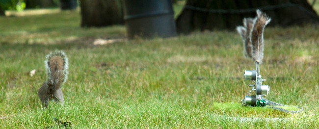

Danger, Squirrel Nutkin!
(2009)
Robot that uses computer vision to scan for squirrel predators such as hawks, foxes, and human beings and warns nearby gray squirrels using an amplified version of their own tail-flick alarm signal if it detects them.

Assistant: Kuan-Ju Wu
Thanks to: Amisha Gadani
Supported in part by a Tough Art Residency at the Children's Museum of Pittsburgh and a Fred Rogers Center Early Career Fellowship.